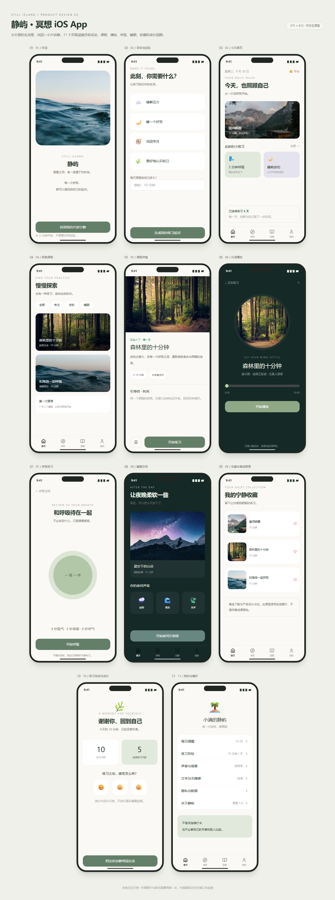

静屿 · 冥想 iOS App
本轮来源
用户指定 gpt-6.1-sol / max，明确允许当前会话。当前助手顺序执行，无子代理；模型名称来源为用户。完整用户要求与本题原文见 prompt.md。系统完整上下文、前序工具输出和历史缺失的材料未导出，输入标记 partial。
批次说明（文件未留存） · 校验记录（文件未留存） · 校验前首轮完整源码快照（文件未留存）
这是一次当前会话的实现记录，不能视作独立会话下的公平性能评测。没有人工修改，所有实现期修复由当前助手完成。
产品与页面
11 个独立手机原型：欢迎、目标与经验、今日首页、探索、课程详情、沉浸播放、呼吸练习、睡眠空间、收藏与下载、完成与成长、我的偏好。所有页面在 index.html 中呈现，使用 Tailwind、Unsplash 和 Lucide Static。
交互
目标选择、收藏状态、播放与暂停、拖动进度、4 秒吸气 / 2 秒停留 / 6 秒呼气。播放按钮由用户操作触发 Web Audio 正弦波示例音，计时与进度同步；不是完整冥想语音或真实课程。睡眠内容、统计、通知和离线下载为产品设计占位。
运行与复盘
直接打开 HTML 或 HTTP 访问，外部样式、图片、图标需联网。已检查呼吸周期、播放计时、暂停和 390px 布局；在页面离开时释放音频和计时器。完整覆盖从首次进入到完成练习的流程，未增加未提供的付费和真实内容接口。
预览截图

由本 run 登记的最终预览入口在 Chromium 1440 × 1050 桌面视口生成完整页面截图，采用默认初始演示状态。 <!-- archive:start -->
当前归档信息（自动生成）
- 实验 ID：
meditation--gpt-6-1-sol-max-r01 - 模型：GPT-6.1 Sol；推理档位：max
- 类型：prototype；预览：static；网络：required
- 完整原始输入快照 · 主题与其他版本
- 输入记录：保存用户原始要求及基线任务正文；当前会话顺序执行。完整系统上下文与前序工具输出未导出，参见 docs/experiments/gpt-6-1-sol-max。
- 工具：Codex。用户指定 gpt-6.1-sol / max；当前会话直接执行，无子代理。Windows，Node 22.16.0，npm 10.9.2；日期按用户环境上下文。
- 运行方式：浏览器直接打开本目录入口；CDN/外部素材需要联网。
- 费用记录：OpenAI · ChatGPT Plus 订阅；单案例货币金额未记录。据用户说明，OpenAI 模型通过 ChatGPT Plus 订阅测试；全部案例完成后，五小时额度未耗尽。未提供单案例费用金额。
- 主页面
部署适配记录
- 2026-09-30：从空白基线首次实现；按主题最新提示词执行，未获取历史实现。 <!-- archive:end -->